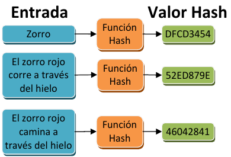
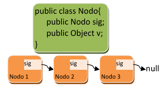
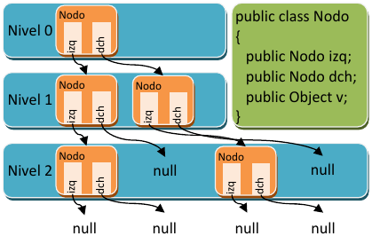
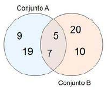
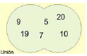
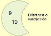
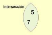
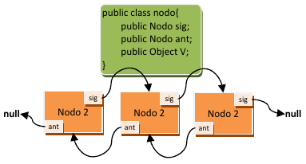

Colecciones¶

Al finalizar esta unidad serás capaz de...
- Conocer el framework de colecciones de Java
- Utilizar las interfaces List, Set y Map
- Elegir la implementación adecuada (ArrayList, HashSet, HashMap, etc.)
- Recorrer colecciones con iteradores y for-each
- Aplicar expresiones lambda para operaciones funcionales
- Utilizar Streams para procesar datos
- Implementar la interfaz Comparable y Comparator
Introducción¶
Cuando el volumen de datos a manejar por una aplicación es elevado, no basta con utilizar variables. Manejar los datos de un único pedido en una aplicación puede ser relativamente sencillo, pues un pedido está compuesto por una serie de datos y eso simplemente se traduce en varias variables.
Pero, ¿qué ocurre cuando en una aplicación tenemos que gestionar varios pedidos a la vez? Lo mismo ocurre en otros casos. Para poder realizar ciertas aplicaciones se necesita poder manejar datos que van más allá de meros datos simples (números y letras). A veces, los datos que tiene que manejar la aplicación son datos compuestos, es decir, datos que están compuestos a su vez de varios datos más simples. Por ejemplo, un pedido está compuesto por varios datos, los datos podrían ser el cliente que hace el pedido, la dirección de entrega, la fecha requerida de entrega y los artículos del pedido.
Los datos compuestos son un tipo de estructura de datos, y en realidad ya los has manejado. Las clases son un ejemplo de estructuras de datos que permiten almacenar datos compuestos, y el objeto en sí, la instancia de una clase, sería el dato compuesto. Pero, a veces, los datos tienen estructuras aún más complejas, y son necesarias soluciones adicionales.
Aquí podrás aprender esas soluciones adicionales. Esas soluciones consisten básicamente en la capacidad de poder manejar varios datos del mismo o diferente tipo de forma dinámica y flexible.
Estructuras de almacenamiento¶
¿Cómo almacenarías en memoria un listado de números del que tienes que extraer el valor máximo?
Seguro que te resultaría fácil. Pero, ¿y si el listado de números no tiene un tamaño fijo, sino que puede variar en tamaño de forma dinámica? Entonces la cosa se complica.
Un listado de números que aumenta o decrece en tamaño es una de las cosas que aprenderás a utilizar aquí, utilizando estructuras de datos.
Pasaremos por alto las clases y los objetos, pues ya los has visto con anterioridad, pero debes saber que las clases en sí mismas son la evolución de un tipo de estructuras de datos conocidas como datos compuestos (también llamadas registros). Las clases, además de aportar la ventaja de agrupar datos relacionados entre sí en una misma estructura (característica aportada por los datos compuestos), permiten agregar métodos que manejen dichos datos, ofreciendo una herramienta de programación sin igual. Pero todo esto ya lo sabías.
Las estructuras de almacenamiento, en general, se pueden clasificar de varias formas. Por ejemplo, atendiendo a si pueden almacenar datos de diferente tipo, o si solo pueden almacenar datos de un solo tipo, se pueden distinguir:
- Estructuras con capacidad de almacenar varios datos del mismo tipo: varios números, varios caracteres, etc. Ejemplos de estas estructuras son los arrays, las cadenas de caracteres, las listas y los conjuntos.
- Estructuras con capacidad de almacenar varios datos de distinto tipo: números, fechas, cadenas de caracteres, etc., todo junto dentro de una misma estructura. Ejemplos de este tipo de estructuras son las clases.
Otra forma de clasificar las estructuras de almacenamiento va en función de si pueden o no cambiar de tamaño de forma dinámica:
- Estructuras cuyo tamaño se establece en el momento de la creación o definición y su tamaño no puede variar después. Ejemplos de estas estructuras son los arrays y las matrices (arrays multimensionales).
- Estructuras cuyo tamaño es variable (conocidas como estructuras dinámicas). Su tamaño crece o decrece según las necesidades de forma dinámica. Es el caso de las listas, árboles, conjuntos y, como veremos también, el caso de algunos tipos de cadenas de caracteres.
Por último, atendiendo a la forma en la que los datos se ordenan dentro de la estructura, podemos diferenciar varios tipos de estructuras:
- Estructuras que no se ordenan de por sí, y debe ser el programador el encargado de ordenar los datos si fuera necesario. Un ejemplo de estas estructuras son los arrays.
- Estructuras ordenadas. Se trata de estructuras que al incorporar un dato nuevo a todos los datos existentes, este se almacena en una posición concreta que irá en función del orden. El orden establecido en la estructura puede variar dependiendo de las necesidades del programa: alfabético, orden numérico de mayor a menor, momento de inserción, etc.
Todavía no conoces mucho de las estructuras, y probablemente todo te suena raro y extraño. No te preocupes, poco a poco irás descubriéndolas. Verás que son sencillas de utilizar y muy cómodas.
Clases y métodos genéricos¶
¿Crees qué el código es más legible al utilizar genéricos o qué se complica? La verdad es que al principio cuesta, pero después, el código se entiende mejor que si se empieza a a insertar conversiones de tipo.
Las clases genéricas son equivalentes a los métodos genéricos pero a nivel de clase, permiten definir un parámetro de tipo o genérico que se podrá usar a lo largo de toda la clase, facilitando así crear clases genéricas que son capaces de trabajar con diferentes tipos de datos base. Para crear una clase genérica se especifican los parámetros de e tipo al lado del nombre e de la clase:
1 2 3 4 5 6 7 8 9 10 | |
En el ejemplo anterior, la clase Util contiene el método invertir cuya función es invertir el orden de los elementos de cualquier array, sea del tipo que sea. Para usar esa clase genérica hay que crear un objeto o instancia de dicha clase especificando el tipo base entre los símbolos menor que ("<") y mayor que (">"), justo detrás del nombre e de la clase. Veamos un ejemplo:
1 2 3 4 5 6 | |
Como puedes observar, el uso de genéricos es sencillo, tanto a nivel de clase como a nivel de método.
Simplemente, a la hora de crear una instancia de una clase genérica, hay que especificar el tipo, tanto en la definición (Util<Integer> u) como en la creación (new Util<Integer>()).
Los genéricos los vamos a usar ampliamente a partir de ahora, aplicados a un montón de clases genéricas que tiene Java y que son de gran utilidad, por lo que es conveniente que aprendas bien a usar una clase genérica.
Atención
Los parámetros de tipo de las clases genéricas solo pueden ser clases, no pueden ser jamás tipos de datos primitivos como int, short, double, etc. En su lugar, debemos usar sus clases envoltorio (wrappers) Integer, Short, Double, etc.
Todavía hay un montón de cosas más sobre los métodos y las clases genéricas que deberías saber. A continuación se muestran algunos usos interesantes de los genéricos:
-
Dos o más parámetros de tipo (I):
1 2 3 4 5
public class Util<T,M>{ public static <T,M> int sumaDeLongitudes (T[] a, M[] b){ return a.length+b.length; } }Información
Si el método genérico necesita tener dos o más parámetros genéricos, podemos indicarlo separándolos por comas. En el ejemplo anterior se suman las longitudes de dos arrays que no tienen que ser del mismo tipo.
-
Dos o más parámetros de tipo (II):
1 2 3 4
Integer[] a1={0,1,2,3,4}; Double[] a2={0d,1d,2d,3d,4d}; int resultado=Util.<Integer,Double>sumaDeLongitudes(a1,a2); System.out.println(resultado);Información
Usar un método o una clase con dos o más parámetros genéricos es sencillo, a la hora de invocar al método o crear la clase, se indican los tipos base separados por coma.
-
Dos o más parámetros de tipo (III):
1 2 3 4 5 6 7 8 9 10 11 12 13
public class Terna <A,B,C>{ A a; B b; C c; public terna(A a, B b, C c){ this.a=a; this.b=b; this.c=c; } public A getA(){return a;} public B getB(){return b;} public C getC(){return c;} }Información
Si una clase genérica necesita tener dos o más parámetros genéricos, podemos indicarlo separándolos por comas. En el ejemplo anterior se muestra una clase que almacena una terna de elementos de diferente tipo base que están relacionados entre sí.
-
Métodos con tipos adicionales:
1 2 3 4 5 6 7 8 9
class Util<A,B>{ A a; Util (A a){ this.a=a; } public <B> void Salida(B b){ System.out.println(a.toString() + b.toString()); } }Información
Una clase genérica puede tener unos parámetros genéricos, pero si en uno de sus métodos necesitamos otros parámetros genéricos distintos, no hay problema, podemos combinarlos.
-
Inferencia de tipos (I):
1 2 3 4
Integer[] a1={0,1,2,3,4}; Double[] a2={0d,1d,2d,3d,4d}; util.<Integer,Double>sumaDeLongitudes(a1,a2); util.sumaDeLongitudes(a1,a2);Información
No siempre es necesario indicar los tipos a la hora de instanciar un método genérico. A partir de Java 7, es capaz de determinar los tipos a partir de los parámetros. Las dos expresiones de arriba serian válidas y funcionarían. Si no es capa de inferirlos, nos dará un error a la hora de compilar.
-
Inferencia de tipos (II):
1 2 3 4
Integer a1=0; Double d1=1.3d; Float f1=1.4f; Terna <Integer,Double,Float> t=new Terna<>(a1,d1,f1);Información
A partir de Java 7 es posible usar el operador diamante <> para simplificar la instanciación o creación de nuevos objetos a partir de clases genéricas. Cuidado, esto solo es posible a partir de Java 7.
-
Limitación de tipos
1 2 3 4 5
public class Util { public static <T extends Number> Double sumar (T t1, T t2){ return new Double(t1.doubleValue() + t2.doubleValue()); } }Información
Se pueden limitar el conjunto de tipos que se pueden usar con una clase o método genérico usando el operador
extends. El operadorextendspermite indicar que la clase que se pasa como parámetro genérico tiene que derivar de una clase específica. En el ejemplo, no se admitirá ninguna clase que no derive deNumber, pudiendo así realizar operaciones matemáticas. -
Paso de clases genéricas por parámetro
1 2 3 4 5 6 7
public class Ejemplo <A> { public A a; } ... void test (Ejemplo<Integer> e) { ... }Información
Cuando un método tiene como parámetro una clase genérica (como en el caso del método test del ejemplo), se puede especificar cual debe ser el tipo base usado en la instancia de la clase genérica que se le pasa como argumento. Esto permite, entre otras cosas, crear diferentes versiones de un mismo método (sobrecarga), dependiendo del tipo base usado en la instancia de la clase genérica se ejecutará una versión u otra.
-
Paso de clases genéricas por parámetro. Wildcards. (I)
1 2 3 4 5 6 7
public class Ejemplo <A> { public A a; } ... void test (Ejemplo<?> e) { ... }Información
Cuando un método admite como parámetro una clase genérica en la que no importa el tipo de objeto sobre la que se ha creado, podemos usar el interrogante para indicar "cualquier tipo".
-
Paso de clases genéricas por parámetro. Wildcards. (II)
1 2 3 4 5 6 7
public class Ejemplo <A> { public A a; } ... void test (Ejemplo<? extends Number> e) { ... }Información
También es posible limitar el conjunto de tipos que una clase genérica puede usar, a través del operador
extends. El ejemplo anterior es como decir "cualquier tipo que derive de Number"
Colecciones¶
Introducción¶
¿Qué consideras una colección? Pues seguramente al pensar en el término se te viene a la cabeza una colección de libros o algo parecido, y la idea no va muy desencaminada. Una colección a nivel de software es un grupo de elementos almacenados de forma conjunta en una misma estructura. Eso son las colecciones.
Las colecciones definen un conjunto de interfaces, clases genéricas y algoritmos que permiten manejar grupos de objetos, todo ello enfocado a potenciar la reusabilidad del software y facilitar las tareas de programación. Te parecerá increíble el tiempo que se ahorra empleando colecciones y cómo se reduce la complejidad del software usándolas adecuadamente. Las colecciones permiten almacenar y manipular grupos de objetos que, a priori, están relacionados entre sí (aunque no es obligatorio que estén relacionados, lo lógico es que si se almacenan juntos es porque tienen alguna relación entre sí), pudiendo trabajar con cualquier tipo de objeto (de ahí que se empleen los genéricos en las colecciones).
Además las colecciones permiten realizar algunas operaciones útiles sobre los elementos almacenados, tales como búsqueda u ordenación. En algunos casos es necesario que los objetos almacenados cumplan algunas condiciones (que implementen algunas interfaces), para poder hacer uso de estos algoritmos.
Las colecciones son en general elementos de programación que están disponibles en muchos lenguajes de programación. En algunos lenguajes de programación su uso es algo más complejo (como es el caso de C++), pero en Java su uso es bastante sencillo.
Las colecciones en Java parten de una serie de interfaces básicas. Cada interfaz define un modelo de colección y las operaciones que se pueden llevar a cabo sobre los datos almacenados, por lo que es necesario conocerlas. La interfaz inicial, a través de la cual se han construido el resto de colecciones, es la interfaz java.util.Collection, que define las operaciones comunes a todas las colecciones derivadas. A continuación se muestran las operaciones más importantes definidas por esta interfaz, ten en cuenta que Collection es una interfaz genérica donde <E> es el parámetro de tipo (podría ser cualquier clase):
- Método
int size(): retorna el número de elementos de la colección. - Método
boolean isEmpty(): retornará verdadero si la colección está vacía. - Método
boolean contains (Object element): retornará verdadero si la colección tiene el elemento pasado como parámetro. - Método
boolean add(E element): permitirá añadir elementos a la colección. - Método
boolean remove(Object element): permitirá eliminar elementos de la colección. - Método
Iterator<E> iterator(): permitirá crear un iterador para recorrer los elementos de la colección. Esto se ve más adelante, no te preocupes. - Método
Object[] toArray(): permite pasar la colección a un array de objetos tipo Object. - Método
boolean containsAll(Collection<?> c): permite comprobar si una colección contiene los elementos existentes en otra colección, si es así, retorna verdadero. - Método
boolean addAll(Collection<?> extends E> c): permite añadir todos los elementos de una colección a otra colección, siempre que sean del mismo tipo (o deriven del mismo tipo base). - Método
boolean removeAll(Collection<?> c): si los elementos de la colección pasada como parámetro están en nuestra colección, se eliminan, el resto se quedan. - Método
boolean retainAll(Collection<?> c): si los elementos de la colección pasada como parámetro están en nuestra colección, se dejan, el resto se eliminan. - Método
void clear(): vaciar la colección.
Más adelante veremos cómo se usan estos métodos, será cuando veamos las implementaciones (clases genéricas que implementan alguna de las interfaces derivadas de la interfaz Collection).
![Mermaid diagram]()
Conjuntos (sets)¶
¿Con qué relacionarías los conjuntos? Seguro que con las matemáticas. Los conjuntos son un tipo de colección que no admite duplicados, derivados del concepto matemático de conjunto.

La interfaz java.util.Set define cómo deben ser los conjuntos, y implementa la interfaz Collection, aunque no añade ninguna operación nueva. Las implementaciones (clases genéricas que implementan la interfaz Set) más usadas son las siguientes:
java.util.HashSet. Conjunto que almacena los objetos usando tablas hash (estructura de datos formada básicamente por un array donde la posición de los datos va determinada por una función hash, permitiendo localizar la información de forma extraordinariamente rápida. Los datos están ordenados en la tabla en base a un resumen numérico de los mismos (en hexadecimal generalmente) obtenido a partir de un algoritmo para cálculo de resúmenes, denominadas funciones hash. El resumen no tiene significado para un ser humano, se trata simplemente de un mecanismo para obtener un número asociado a un conjunto de datos. El inconveniente de estas tablas es que los datos se ordenan por el resumen obtenido, y no por el valor almacenado. El resumen, de un buen algoritmo hash, no se parece en nada al contenido almacenado) lo cual acelera enormemente el acceso a los objetos almacenados.
Inconvenientes: necesitan bastante memoria y no almacenan los objetos de forma ordenada (al contrario, pueden aparecer completamente desordenados).
-
java.util.LinkedHashSet. Conjunto que almacena objetos combinando tablas hash, para un acceso rápido a los datos, y listas enlazadas (estructura de datos que almacena los objetos enlazándolos entre sí a través de un apuntador de memoria o puntero, manteniendo un orden, que generalmente es el del momento de inserción, pero que puede ser otro. Cada dato se almacena en una estructura llamada nodo en la que existe un campo, generalmente llamado siguiente, que contiene la dirección de memoria del siguiente nodo (con el siguiente dato)) para conservar el orden. El orden de almacenamiento es el de inserción, por lo que se puede decir que es una estructura ordenada a medias. -
Inconvenientes: necesitan bastante memoria y es algo más lenta que
HashSet. -
java.util.TreeSet. Conjunto que almacena los objetos usando unas estructuras conocidas como árboles rojo‐negro. Son más lentas que los dos tipos anteriores. pero tienen una gran ventaja: los datos almacenados se ordenan por valor. Es decir, que aunque se inserten los elementos de forma desordenada, internamente se ordenan dependiendo del valor de cada uno.
Poco a poco, iremos viendo que son las listas enlazadas y los árboles (no profundizaremos en los árboles rojo‐negro, pero si veremos las estructuras tipo árbol en general). Veamos un ejemplo de uso básico de la estructura HashSet y después, profundizaremos en los LinkedHashSet y los TreeSet .
Para crear un conjunto, simplemente creamos el HashSet indicando el tipo de objeto que va a almacenar, dado que es una clase genérica que puede trabajar con cualquier tipo de dato debemos crearlo como sigue (no olvides hacer la importación de java.util.HashSet primero):
1 2 | |
Después podremos ir almacenando objetos dentro del conjunto usando el método add (definido por la interfaz Set). Los objetos que se pueden insertar serán siempre del tipo especificado al crear el conjunto:
1 2 3 4 | |
Si el elemento ya está en el conjunto, el método add retornará false indicando que no se pueden insertar duplicados. Si todo va bien, retornará true.
Acceso¶
Y ahora te preguntarás, ¿cómo accedo a los elementos almacenados en un conjunto? Para obtener los elementos almacenados en un conjunto hay que usar iteradores, que permiten obtener los elementos del conjunto uno a uno de forma secuencial (no hay otra forma de acceder a los elementos de un conjunto, es su inconveniente). Los iteradores se ven en mayor profundidad más adelante, de momento, vamos a usar iteradores de forma transparente, a través de una estructura for especial, denominada bucle "for-each" o bucle "para cada". En el siguiente código se usa un bucle for-each, en él la variable i va tomando todos los valores almacenados en el conjunto hasta que llega al último:
1 2 3 | |
Como ves la estructura for-each es muy sencilla: la palabra for seguida de "(tipo variable:colección)" y el cuerpo del bucle; tipo es el tipo del objeto sobre el que se ha creado la colección, variable pues es la variable donde se almacenará cada elemento de la colección y coleccion la colección en sí. Los bucles for-each se pueden usar para todas las colecciones.
LinkedHashSet y TreeSet¶
¿En qué se diferencian las estructuras LinkedHashSet y TreeSet de la estructura HashSet? Ya se comento antes, y es básicamente en su funcionamiento interno.

La estructura LinkedHashSet es una estructura que internamente funciona como una lista enlazada, aunque usa también tablas hash para poder acceder rápidamente a los elementos. Una lista enlazada es una estructura similar a la representada en la imagen de la derecha, la cual está compuesta por nodos (elementos que forman la lista) que van enlazándose entre sí. Un nodo contiene dos cosas: el dato u objeto almacenado en la lista y el siguiente nodo de la lista. Si no hay siguiente nodo, se indica poniendo nulo (null) en la variable que contiene el siguiente nodo.
Las listas enlazadas tienen un montón de operaciones asociadas en las que no vamos a profundizar: eliminación de un nodo de la lista, inserción de un nodo al final, al principio o entre dos nodos, etc.
Gracias a las colecciones podremos utilizar listas enlazadas sin tener que complicarnos en detalles de programación.
La estructura TreeSet, en cambio, utiliza internamente árboles. Los árboles son como las listas pero mucho más complejos. En vez de tener un único elemento siguiente, pueden tener dos o más elementos siguientes, formando estructuras organizadas y jerárquicas.
Los nodos se diferencian en dos tipos: nodos padre y nodos hijo; un nodo padre puede tener varios nodos hijo asociados (depende del tipo de árbol), dando lugar a una estructura que parece un árbol invertido (de ahí su nombre).
En la figura de abajo se puede apreciar un árbol donde cada nodo puede tener dos hijos, denominados izquierdo (izq) y derecho (dch). Puesto que un nodo hijo puede también ser padre a su vez, los árboles se suelen visualizar para su estudio por niveles para entenderlos mejor, donde cada nivel contiene hijos de los nodos del nivel anterior, excepto el primer nivel (que no tiene padre).

Los árboles son estructuras complejas de manejar y que permiten operaciones muy sofisticadas. Los árboles usados en los TreeSet, los árboles rojo‐negro, son árboles auto-ordenados, es decir, que al insertar un elemento, este queda ordenado por su valor de forma que al recorrer el árbol, pasando por todos los nodos, los elementos salen ordenados. El ejemplo mostrado en la imagen es simplemente un árbol binario, el más simple de todos.
Nuevamente, no se va a profundizar en las operaciones que se pueden realizar en un árbol a nivel interno (inserción de nodos, eliminación de nodos, búsqueda de un valor, etc.). Nos aprovecharemos de las colecciones para hacer uso de su potencial. En la siguiente tabla tienes un uso comparado de TreeSet y LinkedHashSet . Su creación es similar a como se hace con HashSet , simplemente sustituyendo el nombre de la clase HashSet por una de las otras. Ni TreeSet , ni LinkedHashSet admiten duplicados, y se usan los mismos métodos ya vistos antes, los existentes en la interfaz Set (que es la interfaz que implementan).
- Conjunto
TreeSet(Ejemplo01):
Resultado mostrado por pantalla (el resultado sale ordenado por valor):
1 | |
- Conjunto
LinkedHashSet(Ejemplo02):
Resultado mostrado por pantalla (los valores salen ordenados según el momento de inserción en el conjunto):
1 | |
Operar con elementos¶
¿Cómo podría copiar los elementos de un conjunto de uno a otro? ¿Hay que usar un bucle for y recorrer toda la lista para ello? ¡Qué va! Para facilitar esta tarea, los conjuntos, y las colecciones en general, facilitan un montón de operaciones para poder combinar los datos de varias colecciones. Ya se vieron en un apartado anterior, aquí simplemente vamos poner un ejemplo de su uso.
Partimos del siguiente ejemplo, en el que hay dos colecciones de diferente tipo, cada una con 4 números enteros:

1 2 3 4 | |
En el ejemplo anterior, el literal de número se convierte automáticamente a la clase envoltorio (wrapper) Integer sin tener que hacer nada, lo cual es una ventaja. Veamos las formas de combinar ambas colecciones:
-
Unión. Añadir todos los elementos del conjunto B en el conjunto A.
1A.addAll(B)
Todos los del conjunto A, añadiendo los del B, pero sin repetir los que ya están:
15, 7, 9, 10, 19 y 20. -
Diferencia. Eliminar los elementos del conjunto B que puedan estar en el conjunto A.
1A.removeAll(B)
Todos los elementos del conjunto A, que no estén en el conjunto B:
19, 19. -
Intersección. Retiene los elementos comunes a ambos conjuntos.
1A.retainAll(B)
Todos los elementos del conjunto A, que también están en el conjunto B:
15 y 7.
Recuerda
Estas operaciones son comunes a todas las colecciones.
Consulta el Ejemplo03
Ordenación¶
Por defecto, los TreeSet ordenan sus elementos de forma ascendente, pero, ¿se podría cambiar el orden de ordenación? Los TreeSet tienen un conjunto de operaciones adicionales, además de las que incluye por el hecho de ser un conjunto, que permite entre otras cosas, cambiar la forma de ordenar los elementos. Esto es especialmente útil cuando el tipo de objeto que se almacena no es un simple número, sino algo más complejo (un artículo por ejemplo). TreeSet es capaz de ordenar tipos básicos (números, cadenas y fechas) pero otro tipo de objetos no puede ordenarlos con tanta facilidad.
Para indicar a un TreeSet cómo tiene que ordenar los elementos, debemos decirle cuándo un elemento va antes o después que otro, y cuándo son iguales. Para ello, utilizamos la interfaz genérica java.util.Comparator , usada en general en algoritmos de ordenación, como veremos más adelante.
Se trata de crear una clase que implemente dicha interfaz, así de fácil. Dicha interfaz requiere de un único método que debe calcular si un objeto pasado por parámetro es mayor, menor o igual que otro del mismo tipo. Veamos un ejemplo general de cómo implementar un comparador para una hipotética clase Objeto:
1 2 3 | |
La interfaz Comparator obliga a implementar un único método, es el método compare , el cual tiene dos parámetros: los dos elementos a comparar. Las reglas son sencillas, a la hora de personalizar dicho método:
- Si el primer objeto (o1) es menor que el segundo (o2), debe retornar un número entero negativo.
- Si el primer objeto (o1) es mayor que el segundo (o2), debe retornar un número entero positivo.
- Si ambos son iguales, debe retornar 0.
A veces, cuando el orden que deben tener los elementos es diferente al orden real (por ejemplo cuando ordenamos los números en orden inverso), la definición de antes puede ser un poco liosa, así que es recomendable en tales casos pensar de la siguiente forma:
- Si el primer objeto (o1) debe ir antes que el segundo objeto (o2), retornar entero negativo.
- Si el primer objeto (o1) debe ir después que el segundo objeto (o2), retornar entero positivo.
- Si ambos son iguales, debe retornar 0.
Una vez creado el comparador simplemente tenemos que pasarlo como parámetro en el momento de la creación al TreeSet , y los datos internamente mantendrán dicha ordenación:
1 | |
Hay otra manera de definir esta ordenación, pero lo estudiaremos más a fondo en el punto Comparadores
Para entender mejor los Sets revisa el Ejemplo04
Listas¶
¿En qué se diferencia una lista de un conjunto? Las listas son elementos de programación un poco más avanzados que los conjuntos. Su ventaja es que amplían el conjunto de operaciones de las colecciones añadiendo operaciones extra, veamos algunas de ellas:
- Las listas si pueden almacenar duplicados, si no queremos duplicados, hay que verificar manualmente que el elemento no esté en la lista antes de su inserción.
- Acceso posicional. Podemos acceder a un elemento indicando su posición en la lista.
- Búsqueda. Es posible buscar elementos en la lista y obtener su posición. En los conjuntos, al ser colecciones sin aportar nada nuevo, solo se podía comprobar si un conjunto contenía o no un elemento de la lista, retornando verdadero o falso. Las listas mejoran este aspecto.
- Extracción de sublistas. Es posible obtener una lista que contenga solo una parte de los elementos de forma muy sencilla.
En Java, para las listas se dispone de una interfaz llamada java.util.List, y dos implementaciones (java.util.LinkedList y java.util.ArrayList), con diferencias significativas entre ellas. Los métodos de la interfaz List, que obviamente estarán en todas las implementaciones, y que permiten las operaciones anteriores son:
E get(int index). El métodogetpermite obtener un elemento partiendo de su posición (index).E set(int index, E element). El métodosetpermite cambiar el elemento almacenado en una posición de la lista (index), por otro (element).void add(int index, E element). Se añade otra versión del métodoadd, en la cual se puede insertar un elemento (element) en la lista en una posición concreta (index), desplazando los existentes.E remove(int index). Se añade otra versión del métodoremove, esta versión permite eliminar un elemento indicando su posición en la lista.boolean addAll(int index, Collection<? extends E> c). Se añade otra versión del métodoaddAll, que permite insertar una colección pasada por parámetro en una posición de la lista, desplazando el resto de elementos.int indexOf(Object o). El métodoindexOfpermite conocer la posición (índice) de un elemento, si dicho elemento no está en la lista retornará‐1.int lastIndexOf(Object o). El métodolastIndexOfnos permite obtener la última ocurrencia del objeto en la lista (dado que la lista si puede almacenar duplicados).List<E> subList(int from, int to). El métodosubListgenera una sublista (una vista parcial de la lista) con los elementos comprendidos entre la posición inicial (incluida) y la posición final (no incluida).
Ten en cuenta que los elementos de una lista empiezan a numerarse por 0. Es decir, que el primer elemento de la lista es el 0. Ten en cuenta también que List es una interfaz genérica, por lo que <E> corresponde con el tipo base usado como parámetro genérico al crear la lista.
Uso¶
Y, ¿cómo se usan las listas? Pues para usar una lista haremos uso de sus implementaciones LinkedList y ArrayList. Veamos un ejemplo de su uso y después obtendrás respuesta a esta pregunta.

Supongo que intuirás como se usan, pero nunca viene mal un ejemplo sencillo, que nos aclare las ideas. El siguiente ejemplo muestra como usar un LinkedList pero valdría también para ArrayList (no olvides importar las clases java.util.LinkedList y java.util.ArrayList según sea necesario). En este ejemplo se usan los métodos de acceso posicional a la lista:
1 2 3 4 5 6 | |
En el ejemplo anterior, se realizan muchas operaciones, ¿cuál será el contenido de la lista al final? Pues será 2, 3 y 5. En el ejemplo cabe destacar el uso del bucle for-each , recuerda que se puede usar en cualquier colección.
Veamos otro ejemplo, esta vez con ArrayList, de cómo obtener la posición de un elemento en la lista:
1 2 3 | |
En el ejemplo anterior, se emplea tanto el método indexOf para obtener la posición de un elemento, como el método set para reemplazar el valor en una posición, una combinación muy habitual. El ejemplo anterior generará un ArrayList que contendrá dos números, el 10 y el 12. Veamos ahora un ejemplo algo más difícil:
1 | |
Información
subList  Returns a view of the portion of this list between the specified
Returns a view of the portion of this list between the specified fromIndex, inclusive, and toIndex, exclusive. (API de Java)
Este ejemplo es especial porque usa sublistas. Se usa el método size para obtener el tamaño de la lista. Después el método subList para extraer una sublista de la lista (que incluía en origen los números 2, 3 y 5), desde la posición 1 hasta el final de la lista (lo cual dejaría fuera al primer elemento). Y por último, se usa el método addAll para añadir todos los elementos de la sublista al ArrayList anterior. Y quedaria:
1 | |
Debes saber que las operaciones aplicadas a una sublista repercuten sobre la lista original. Por ejemplo, si ejecutamos el método clear sobre una sublista, se borrarán todos los elementos de la sublista, pero también se borrarán dichos elementos de la lista original:
1 2 3 4 5 | |
Lo mismo ocurre al añadir un elemento, se añade en la sublista y en la lista original.
Puedes consultar el código en el Ejemplo05
LinkedList y ArrayList¶
¿Y en qué se diferencia un LinkedList de un ArrayList ?
Los LinkedList utilizan listas doblemente enlazadas, que son listas enlazadas (como se vio en un apartado anterior), pero que permiten ir hacia atrás en la lista de elementos. Los elementos de la lista se encapsulan en los llamados nodos.
Los nodos van enlazados unos a otros para no perder el orden y no limitar el tamaño de almacenamiento. Tener un doble enlace significa que en cada nodo se almacena la información de cuál es el siguiente nodo y además, de cuál es el nodo anterior. Si un nodo no tiene nodo siguiente o nodo anterior, se almacena null o nulo para ambos casos.
No es el caso de los ArrayList. Estos se implementan utilizando arrays que se van redimensionando conforme se necesita más espacio o menos. La redimensión es transparente a nosotros, no nos enteramos cuando se produce, pero eso redunda en una diferencia de rendimiento notable dependiendo del uso. Los ArrayList son más rápidos en cuanto a acceso a los elementos, acceder a un elemento según su posición es más rápido en un array que en una lista doblemente enlazada (hay que recorrer la lista). En cambio, eliminar un elemento implica muchas más operaciones en un array que en una lista enlazada de cualquier tipo.
¿Y esto que quiere decir? Que si se van a realizar muchas operaciones de eliminación de elementos sobre la lista, conviene usar una lista enlazada (LinkedList), pero si no se van a realizar muchas eliminaciones, sino que solamente se van a insertar y consultar elementos por posición, conviene usar una lista basada en arrays redimensionados (ArrayList ).
LinkedList tiene otras ventajas que nos puede llevar a su uso. Implementa las interfaces java.util.Queue y java.util.Deque . Dichas interfaces permiten hacer uso de las listas como si fueran una cola de prioridad o una pila, respectivamente.
Las colas, también conocidas como colas de prioridad, son una lista pero que aportan métodos para trabajar de forma diferente. ¿Tú sabes lo que es hacer cola para que te atiendan en una ventanilla?
Pues igual. Se trata de que el que primero que llega es el primero en ser atendido (FIFO en inglés). Simplemente se aportan tres métodos nuevos: meter en el final de la lista (add y offer), sacar y eliminar el elemento más antiguo (poll), y examinar el elemento al principio de la lista sin eliminarlo (peek). Dichos métodos están disponibles en las listas enlazadas LinkedList :
boolean add(E e)yboolean offer(E e), retornarán true si se ha podido insertar el elemento al final de laLinkedList.E poll()retornará el primer elemento de laLinkedListy lo eliminará de la misma. Al insertar al final, los elementos más antiguos siempre están al principio. Retornará null si la lista está vacía.E peek()retornará el primer elemento de laLinkedListpero no lo eliminará, permite examinarlo. Retornará null si la lista está vacía.
Las pilas, mucho menos usadas, son todo lo contrario a las listas. Una pila es igual que una montaña de hojas en blanco, para añadir hojas nuevas se ponen encima del resto, y para retirar una se coge la primera que hay, encima de todas. En las pilas el último en llegar es el primero en ser atendido. Para ello se proveen de tres métodos: meter al principio de la pila (push), sacar y eliminar del principio de la pila (pop), y examinar el primer elemento de la pila (peek, igual que si usara la lista como una cola). Las pilas se usan menos y haremos menos hincapié en ellas. Simplemente ten en mente que, tanto las colas como las pilas, son una lista enlazada sobre la que se hacen operaciones especiales.
A tener en cuenta¶
A la hora de usar las listas, hay que tener en cuenta un par de detalles, ¿sabes cuáles? Es sencillo, pero importante.
No es lo mismo usar las colecciones (listas y conjuntos) con objetos inmutables (Strings, Integer, etc.) que con objetos mutables. Los objetos inmutables no pueden ser modificados después de su creación, por lo que cuando se incorporan a la lista, a través de los métodos add , se pasan por copia (es decir, se realiza una copia de los mismos). En cambio los objetos mutables (como las clases que tú puedes crear), no se copian, y eso puede producir efectos no deseados.
Imagínate la siguiente clase, que contiene un número:
1 2 3 4 5 6 | |
La clase de antes es mutable, por lo que no se pasa por copia a la lista. Ahora imagina el siguiente código en el que se crea una lista que usa este tipo de objeto, y en el que se insertan dos objetos:
1 2 3 4 5 6 7 8 | |
¿Qué mostraría por pantalla el código anterior? Simplemente mostraría los números 11 y 12. Ahora bien, ¿qué pasa si modificamos el valor de uno de los números de los objetos test? ¿Qué se mostrará al ejecutar el siguiente código?
1 2 | |
El resultado de ejecutar el código anterior es que se muestran los números 44 y 12. El número ha sido modificado y no hemos tenido que volver a insertar el elemento en la lista para que en la lista se cambie también. Esto es porque en la lista no se almacena una copia del objeto Test, sino un apuntador a dicho objeto (solo hay una copia del objeto a la que se hace referencia desde distintos lugares).
Información
"Controlar la complejidad es la esencia de la programación." Brian Kernighan
Consulta el Ejemplo06
Conjuntos de pares [clave/valor] (Diccionario)¶
¿Cómo almacenarías los datos de un diccionario? Tenemos por un lado cada palabra y por otro su significado. Para resolver este problema existen precisamente los arrays asociativos . Un tipo de array asociativo son los mapas o diccionarios, que permiten almacenar pares de valores conocidos como clave y valor. La clave se utiliza para acceder al valor, como una entrada de un diccionario permite acceder a su definición.
En Java existe la interfaz java.util.Map que define los métodos que deben tener los mapas, y existen tres implementaciones principales de dicha interfaz: java.util.HashMap, java.util.TreeMap y java.util.LinkedHashMap. ¿Te suenan? Claro que si. Cada una de ellas, respectivamente, tiene características similares a HashSet , TreeSet y LinkedHashSet , tanto en funcionamiento interno como en rendimiento.
Los mapas utilizan clases genéricas para dar extensibilidad y flexibilidad, y permiten definir un tipo base para la clave, y otro tipo diferente para el valor. Veamos un ejemplo de como crear un mapa, que es extensible a los otros dos tipos de mapas:
1 | |
El mapa anterior permite usar cadenas como llaves y almacenar de forma asociada a cada llave, un número entero. Veamos los métodos principales de la interfaz Map, disponibles en todas las implementaciones. En los ejemplos, V es el tipo base usado para el valor (Value) y K el tipo base usado para la llave (Key):
| Método. | Descripción. |
|---|---|
V put(K key, V value); | Inserta un par de objetos llave (key) y valor (value) en el mapa. Si la llave ya existe en el mapa, entonces retornará el valor asociado que tenía antes, si la llave no existía, entonces retornará null. |
V get(Object key); | Obtiene el valor asociado a una llave ya almacenada en el mapa. Si no existe la llave, retornará null. |
V remove(Object key); | Elimina la llave y el valor asociado. Retorna el valor asociado a la llave, por si lo queremos utilizar para algo, o null, si la llave no existe. |
boolean containsKey(Object key); | Retornará true si el mapa tiene almacenada la llave pasada por parámetro, false en cualquier otro caso. |
boolean containsValue(Object value); | Retornará true si el mapa tiene almacenado el valor pasado por parámetro, false en cualquier otro caso. |
int size(); | Retornará el número de pares llave y valor almacenado en el mapa. |
boolean isEmpty(); | Retornará true si el mapa está vacío, false en cualquier otro caso. |
void clear(); | Vacía el mapa. |
Revisa el Ejemplo07
![Mermaid diagram]()
Recorrido con keySet o entrySet¶
1 2 3 4 5 6 7 8 9 10 11 | |
Iteradores¶
¿Qué son los iteradores realmente? Son un mecanismo que nos permite recorrer todos los elementos de una colección de forma sencilla, de forma secuencial, y de forma segura. Los mapas, como no derivan de la interfaz Collection realmente, no tienen iteradores, pero como veremos, existe un truco interesante.
Los iteradores permiten recorrer las colecciones de dos formas: bucles for‐each (existentes en Java a partir de la versión 1.5) y a través de un bucle normal creando un iterador. Como los bucles for-each ya los hemos visto antes (y ha quedado patente su simplicidad), nos vamos a centrar en el otro método, especialmente útil en versiones antiguas de Java. Ahora la pregunta es, ¿cómo se crea un iterador? Pues invocando el método "iterator()" de cualquier colección.
Veamos un ejemplo (en el ejemplo t es una colección cualquiera):
1 | |
Fíjate que se ha especificado un parámetro para el tipo de dato genérico en el iterador (poniendo <Integer> después de Iterator). Esto es porque los iteradores son también clases genéricas, y es necesario especificar el tipo base que contendrá el iterador. Sino se especifica el tipo base del iterador, igualmente nos permitiría recorrer la colección, pero retornará objetos tipo Object (clase de la que derivan todas las clases), con lo que nos veremos obligados a forzar la conversión de tipo.
Para recorrer y gestionar la colección, el iterador ofrece tres métodos básicos:
boolean hasNext(). Retornará true si le quedan más elementos a la colección por visitar. False en caso contrario.E next(). Retornará el siguiente elemento de la colección, si no existe siguiente elemento, lanzará una excepción (NoSuchElementExceptionpara ser exactos), con lo que conviene chequear primero si el siguiente elemento existe.remove(). Elimina de la colección el último elemento retornado en la última invocación de next (no es necesario pasarselo por parámetro). Cuidado, si next no ha sido invocado todavía, saltará una incomoda excepción.
¿Cómo recorreríamos una colección con estos métodos? Pues de una forma muy sencilla, un simple bucle mientras (while) con la condición hasNext() nos permite hacerlo:
1 2 3 4 5 | |
¿Qué elementos contendría la lista después de ejecutar el bucle? Efectivamente, solo los números impares.
Información
Las listas permiten acceso posicional a través de los métodos get y set, y acceso secuencial a través de iteradores, ¿cuál es para tí la forma más cómoda de recorrer todos los elementos? ¿Un acceso posicional a través un bucle for (i=0;i<lista.size();i++) o un acceso secuencial usando un bucle while (iterador.hasNext())?
¿Qué inconvenientes tiene usar los iteradores sin especificar el tipo de objeto? En el siguiente ejemplo, se genera una lista con los números del 0 al 10. De la lista, se eliminan aquellos que son pares y solo se dejan los impares. En el primer ejemplo se especifica el tipo de objeto del iterador, en el segundo ejemplo no, observa el uso de la conversión de tipos en la línea 7.
Ejemplo indicando el tipo de objeto de iterador.
1 2 3 4 5 6 7 8 9 10 11 12 13 | |
Ejemplo no indicando el tipo de objeto del iterador,
1 2 3 4 5 6 7 8 9 10 11 | |
Un iterador es seguro porque esta pensado para no sobrepasar los límites de la colección, ocultando operaciones más complicadas que pueden repercutir en errores de software. Pero realmente se convierte en inseguro cuando es necesario hacer la operación de conversión de tipos. Si la colección no contiene los objetos esperados, al intentar hacer la conversión, saltará una incómoda excepción.
Usar genéricos aporta grandes ventajas, pero usándolos adecuadamente.
Para recorrer los mapas con iteradores, hay que hacer un pequeño truco. Usamos el método entrySet que ofrecen los mapas para generar un conjunto con las entradas (pares de llave‐valor), o bien, el método keySet para generar un conjunto con las llaves existentes en el mapa. Veamos como sería para el segundo caso, el más sencillo:
1 2 3 4 5 6 7 8 | |
Lo único que tienes que tener en cuenta es que el conjunto generado por keySet no tendrá obviamente el método add para añadir elementos al mismo, dado que eso tendrás que hacerlo a través del mapa.
Atención
Si usas iteradores, y piensas eliminar elementos de la colección (e incluso de un mapa), debes usar el método remove del iterador y no el de la colección. Si eliminas los elementos utilizando el método remove de la colección, mientras estás dentro de un bucle de iteración, o dentro de un bucle for‐each, los fallos que pueden producirse en tu programa son impredecibles. ¿Logras adivinar porqué se pueden producir dichos problemas?
Los problemas son debidos a que el método remove del iterador elimina el elemento de dos sitios: de la colección y del iterador en sí (que mantiene interiormente información del orden de los elementos). Si usas el método remove de la colección, la información solo se elimina de un lugar, de la colección.
Consulta el Ejemplo08 para ver un ejemplo de iteradores.
Consulta el Ejemplo09 para ver el mismo ejemplo resuelto con un iterador.
Comparadores¶
En Java hay dos mecanismos para cambiar la forma en la que los elementos se ordenan. Imagina que tienes los artículos almacenados en una lista llamada articulos, y que cada artículo se almacena en la siguiente clase Articulo (fíjate que el código de artículo es una cadena y no un número):
1 2 3 4 5 | |
La primera forma de ordenar consiste en crear una clase que implemente la interfaz java.util.Comparator, y por ende, el método compare definido en dicha interfaz. Esto se explicó en el apartado de conjuntos, al explicar el TreeSet, así que no vamos a profundizar en ello. No obstante, el comparador para ese caso podría ser así:
1 2 3 4 5 6 | |
Una vez creada esta clase, ordenar los elementos es muy sencillo, simplemente se pasa como segundo parámetro del método sort una instancia del comparador creado:
1 | |
La segunda forma es quizás más sencilla cuando se trata de objetos cuya ordenación no existe de forma natural, pero requiere modificar la clase Articulo. Consiste en hacer que los objetos que se meten en la lista o array implementen la interfaz java.util.Comparable. Todos los objetos que implementan la interfaz Comparable son "ordenables" y se puede invocar el método sort sin indicar un comparador para ordenarlos. La interfaz comparable solo requiere implementar el método compareTo:
1 2 3 4 5 6 7 8 9 10 | |
Del ejemplo anterior se pueden denotar dos cosas importantes: que la interfaz Comparable es genérica y que para que funcione sin problemas es conveniente indicar el tipo base sobre el que se permite la comparación (en este caso, el objeto Articulo debe compararse consigo mismo), y que el método compareTo solo admite un parámetro, dado que comparará el objeto con el que se pasa por parámetro.
El funcionamiento del método compareTo es el mismo que el método compare de la interfaz Comparator: si la clase que se pasa por parámetro es igual al objeto, se tendría que retornar 0; si es menor o anterior, se debería retornar un número menor que cero; si es mayor o posterior, se debería retornar un número mayor que 0.
Ordenar ahora la lista de artículos es sencillo, fíjate que fácil: Collections.sort(coleccionArticulos);
Consulta el Ejemplo10 para ver el uso de Comparator.
Consulta el Ejemplo11 para ver el uso de Comparable.
Extras¶
¿Qué más ofrece las clases java.util.Collections y java.util.Arrays de Java? Una vez vista la ordenación, quizás lo más complicado, veamos algunas operaciones adicionales. En los ejemplos, la variable array es un array y la variable lista es una lista de cualquier tipo de elemento:
| Operación | Descripción | Ejemplos |
|---|---|---|
| Desordenar una lista. | Desordena una lista, este método no está disponible para arrays. | Collections.shuffle (lista); |
| Rellenar una lista o array. | Rellena una lista o array copiando el mismo valor en todos los elementos del array o lista. Útil para reiniciar una lista o array. | Collections.fill (lista,elemento);Arrays.fill (array,elemento); |
| Búsqueda binaria. | Permite realizar búsquedas rápidas en un una lista o array ordenados. Es necesario que la lista o array estén ordenados, sino lo están, la búsqueda no tendrá éxito. | Collections.binarySearch(lista,elemento);Arrays.binarySearch(array, elemento); |
| Convertir un array a lista. | Permite rápidamente convertir un array a una lista de elementos, extremadamente útil. No se especifica el tipo de lista retornado (no es ArrayList ni LinkedList), solo se especifica que retorna una lista que implementa la interfaz java.util.List. | List lista = Arrays.asList(array); Si el tipo de dato almacenado en el array es conocido ( Integer por ejemplo), es conveniente especificar el tipo de objeto de la lista: List<Integer> lista = Arrays.asList(array); |
| Convertir una lista a array. | Permite convertir una lista en array. Esto se puede realizar en todas las colecciones, y no es un método de la clase Collections, sino propio de la interfaz Collection. Es conveniente que sepas de su existencia. | Para este ejemplo, supondremos que los elementos de la lista son números, dado que hay que crear un array del tipo almacenado en la lista, y del tamaño de la lista: Integer[] array=new Integer[lista.size()];lista.toArray(array); |
| Dar la vuelta. | Da la vuelta a una lista, poniéndola en orden inverso al que tiene. | Collections.reverse(lista); |
| Imprimir un array o lista | lista.toString() Arrays.toString(array) |
Otra operación que ya se ha visto en algún ejemplo anterior es la de dividir una cadena en partes. Cuando una cadena está formada internamente por trozos de texto claramente delimitados por un separador (una coma, un punto y coma o cualquier otro), es posible dividir la cadena y obtener cada uno de los trozos de texto por separado en un array de cadenas.
Para poder realizar esta operación, usaremos el método split de la clase String . El delimitador o separador es una expresión regular, único argumento del método split, y puede ser obviamente todo lo complejo que sea necesario:
1 2 3 4 5 | |
En el ejemplo anterior la cadena texto contiene una serie de letras separadas por comas. La cadena se ha dividido con el método split , y se ha guardado cada carácter por separado en un array. Después se ha ordenado el array. ¡Increíble lo que se puede llegar a hacer con solo tres líneas de código!
Programación funcional¶
¿Qué es la programación funcional?¶
Paradigma de programación declarativo, no imperativo, se dice cómo es el problema a resolver, en lugar de los pasos a seguir para resolverlo.
La mayoría de lenguajes populares actuales no se pueden considerar funcionales, ni puros ni híbridos, pero han adaptado su sintaxis y funcionalidad para ofrecer parte de este paradigma.
Características principales¶
Transparencia referencial: la salida de una función debe depender sólo de sus argumentos. Si la llamamos varias veces con los mismos argumentos, debe producir siempre el mismo resultado.
Inmutabilidad de los datos: los datos deben ser inmutables para evitar posibles efectos colaterales.
Composición de funciones: las funciones se tratan como datos, de modo que la salida de una función se puede tomar como entrada para la siguiente.
Funciones de primer orden: funciones que permiten tener otras funciones como parámetros, a modo de callbacks.
Información
Si llamamos repetidamente a esta función con el parámetro 1, cada vez producirá un resultado distinto (3, 4, 5...)
1 2 3 4 5 6 7 8 | |
Imperativo vs Declarativo
Queremos obtener una sublista con los mayores de edad de entre una lista de personas:
Imperativo:
1 2 3 4 5 | |
Declarativo
1 | |
Se puede observar que el ejemplo declarativo es más compacto, y menos propenso a errores. (Además sirve de ejemplo a la composición de funciones)
Funciones Lambda¶
Son expresiones breves que simplifican la implementación de elementos más costosos en cuanto a líneas de código. También se las conoce como funciones anónimas, no necesitan una clase/nombre. En java se pueden aplicar a la implementación de interfaces, aunque tienen más utilidades prácticas. En algunos lenguajes se les suele denominar "funciones flecha" (arrow functions) ya que en su sintaxis es característica una flecha, que separa la cabecera de la función de su cuerpo.
Comparaciones
API del método List.sort de Java:
1 | |
La interfaz Comparator pide implementar un método compare, que recibe dos datos del tipo a tratar (T), y devuelve un entero indicando si el primero es menor, mayor, o son iguales (de forma similar al método compareTo de la interfaz Comparable.)
1 | |
Imaginemos una clase Persona:
1 2 3 4 5 | |
Y un ArrayList personas formada por objetos de tipo Persona:
1 2 3 4 5 6 7 8 | |
Ahora queremos ordenar el ArrayList de personas de mayor a menor edad usando...
Implementación "tradicional" java: Comparator oComparable
1 2 3 4 5 6 7 8 | |
1 2 3 4 5 6 | |
Sin embargo, implementado con funciones Lambda seria...
1 2 3 4 5 6 | |
Estructura de una expresión lambda¶
(lista de parametros) -> {cuerpo de la función a implementar}
- El operador lambda (
->) separa la declaración de parámetros de la declaración del cuerpo de la función. - Los parámetros del lado izquierdo de la flecha se pueden omitir si sólo hay un parámetro. Cuando no se tienen parámetros, o cuando se tienen dos o más, es necesario utilizar paréntesis.
- El cuerpo de la función son las llaves de la parte derecha se pueden omitir si la única operación a realizar es un simple
return.
Funciones Lambda (Las utilizaremos a fondo con las Interfaces)¶
1 | |
1 | |
1 | |
1 2 3 4 5 | |
Gestión de colecciones con streams en Java¶
Desde Java 8, permiten procesar grandes cantidades de datos aprovechando la paralelización que permita el sistema. No modifican la colección original, sino que crean copias.
Dos tipos de operaciones
- Intermedias: devuelven otro stream resultado de procesar el anterior de algún modo (filtrado, mapeo), para ir enlazando operaciones
- Finales: cierran el stream devolviendo algún resultado (colección resultante, cálculo numérico, etc).
Muchas de estas operaciones tienen como parámetro una interfaz, que puede implementarse muy brevemente empleando expresiones lambda
![Mermaid diagram]()
Filtrado¶
El método filter es una operación intermedia que permite quedarnos con los datos de una colección que cumplan el criterio indicado como parámetro. filter recibe como parámetro una interfaz Predicate, cuyo método test recibe como parámetro un objeto y devuelve si ese objeto cumple o no una determinada condición.
1 2 3 | |
Mapeo¶
El método map es una operación intermedia que permite transformar la colección original para quedarnos con cierta parte de la información o crear otros datos. map recibe como parámetro una interfaz Function, cuyo método apply recibe como parámetro un objeto y devuelve otro objeto diferente, normalmente derivado del parámetro.
1 2 3 | |
Combinar¶
Se pueden combinar operaciones intermedias (composición de funciones) para producir resultados más complejos. Por ejemplo, las edades de las personas adultas.
1 2 3 4 | |
Ordenar¶
El método sorted es una operación intermedia que permite ordenar los elementos de una colección según cierto criterio. Por ejemplo, ordenar las personas adultas por edad. sorted recibe como parámetro una interfaz Comparator, que ya conocemos.
1 2 3 4 | |
Colección¶
El método collect es una operación final que permite obtener algún tipo de colección a partir de los datos procesados por las operaciones intermedias. Por ejemplo, una lista con las edades de las personas adultas.
1 2 | |
El método collect también permite obtener una cadena de texto que una los elementos resultantes, a través de un separador común. En la función Collectors.joining se puede indicar también un prefijo y un sufijo para el texto.
1 2 3 4 | |
forEach¶
El método forEach permite recorrer cada elemento del stream resultante, y hacer lo que se necesite con él. Por ejemplo, sacar por pantalla en líneas separadas los nombres de las personas adultas.
1 2 | |
Media aritmética¶
El método average permite, junto con la operación intermedia mapToInt, obtener una media de un stream que haya producido una colección resultante numérica. Por ejemplo, la media de edades de las personas adultas.
1 2 | |
Observa el Ejemplo12 para ver la diferencia entre programación imperativa y funcional con Stream.
Observa el Ejemplo13 para ver ordenación con Comparator vs. expresión lambda.
Observa el Ejemplo14 para ver operaciones funcionales con Stream: filtrado, mapeo, ordenación y combinación.
Ejemplos UD07¶
Ejemplo01¶
Uso básico de TreeSet: conjunto ordenado de enteros.
1 2 3 4 5 6 7 8 9 10 11 12 13 14 15 16 | |
Ejemplo02¶
Uso básico de LinkedHashSet: conjunto que mantiene el orden de inserción.
1 2 3 4 5 6 7 8 9 10 11 12 13 14 15 16 | |
Ejemplo03¶
Operaciones sobre conjuntos: addAll, removeAll y retainAll.
1 2 3 4 5 6 7 8 9 10 11 12 13 14 15 16 17 18 19 20 21 22 23 24 25 26 27 28 29 30 31 32 33 34 35 36 37 38 39 40 41 42 43 44 45 46 47 48 49 50 | |
Ejemplo04¶
Realiza un pequeño programa que pregunte al usuario 5 números diferentes (almacenándolos en un HashSet), y que después calcule la suma de los mismos (usando un bucle for‐each).
Respuesta:
Una solución posible podría ser la siguiente. Fíjate en la solución y verás que el uso de conjuntos ha simplificado enormemente el ejercicio, permitiendo al programador o la programadora centrarse en otros aspectos:
1 2 3 4 5 6 7 8 9 10 11 12 13 14 15 16 17 18 19 20 21 22 23 24 25 26 27 28 29 30 | |
Ejemplo05¶
Operaciones con LinkedList y ArrayList: inserción, eliminación y uso de subList.
1 2 3 4 5 6 7 8 9 10 11 12 13 14 15 16 17 18 19 20 21 22 23 24 25 26 27 28 29 30 31 32 33 34 35 | |
Ejemplo06¶
Tenemos la clase Producto con:
- Dos atributos: nombre (
String) y cantidad (int). - Un constructor con parámetros.
- Un constructor sin parámetros.
- Métodos
getysetasociados a los atributos.
Producto.java
1 2 3 4 5 6 7 8 9 10 11 12 13 14 15 16 17 18 19 20 21 22 23 24 25 26 27 28 29 30 31 32 33 34 35 36 37 38 39 40 41 | |
En el programa principal creamos una lista de productos y realizamos operaciones sobre ella:
Ejemplo06.java
1 2 3 4 5 6 7 8 9 10 11 12 13 14 15 16 17 18 19 20 21 22 23 24 25 26 27 28 29 30 31 32 33 34 35 36 37 38 39 40 41 42 43 44 45 46 47 48 49 50 51 52 53 54 55 | |
Ejemplo07¶
Uso básico de HashMap: inserción, búsqueda por clave y valor, eliminación y recorrido.
1 2 3 4 5 6 7 8 9 10 11 12 13 14 15 16 17 18 19 20 21 22 23 24 25 26 27 28 29 30 31 32 33 34 35 36 | |
Ejemplo08¶
Ejemplo que crea, rellena y recorre un ArrayList de dos formas diferentes. Cabe destacar que, por defecto, el método System.out.println() invoca al método toString() de los elementos que se le pasen como argumento, por lo que realmente no es necesario utilizar toString() dentro de println().
1 2 3 4 5 6 7 8 9 10 11 12 13 14 15 16 17 18 19 20 21 22 23 24 25 26 27 28 29 30 31 32 33 34 35 36 37 38 39 40 41 42 43 44 45 46 47 48 49 50 | |
Ejemplo09¶
Recorrido de una lista con Iterator y modificación de objetos mutables dentro de la colección.
1 2 3 4 5 6 7 8 9 10 11 12 13 14 15 16 17 18 19 20 21 22 23 24 25 26 27 28 29 30 31 32 33 34 35 36 37 38 39 40 41 42 43 44 45 46 47 48 49 50 51 52 53 54 55 56 57 58 59 60 61 62 63 | |
Ejemplo10¶
Ejercicio resuelto Comparator1. Imagínate que Objeto es una clase como la siguiente:
1 2 3 4 5 6 7 8 9 10 11 12 13 14 15 16 17 18 | |
Imagina que ahora, al añadirlos en un TreeSet, estos se tienen que ordenar de forma que la suma de sus atributos (a y b) sea descendente, ¿como sería el comparador?
Respuesta
Una de las posibles soluciones a este problema podría ser la siguiente:
1 2 3 4 5 6 7 8 9 10 11 12 13 14 15 16 17 18 19 | |
Y para usarlo tendriamos:
1 2 3 4 5 6 7 8 9 10 11 12 13 14 15 16 17 18 19 20 21 | |
Observa que la salida muestra los elementos correctamente ordenados, aunque se insertaron de manera "aleatoria":
1 2 3 4 | |
Ejemplo11¶
Ejercicio resuelto Comparator2. Ahora convertiremos la clase Objeto para que directamente implemente la interfaz Comparable:
1 2 3 4 5 6 7 8 9 10 11 12 13 14 15 16 17 18 19 20 21 22 23 24 25 26 27 28 29 30 31 | |
Y lo usamos directamente en la clase Principal:
1 2 3 4 5 6 7 8 9 10 11 12 13 14 15 16 17 18 19 | |
Fíjate que la salida sigue mostrando los elementos correctamente ordenados, aunque se insertaron de manera "aleatoria":
1 2 3 4 | |
Ejemplo12¶
Programación imperativa vs. funcional con Stream: filtrado de personas mayores de edad.
1 2 3 4 5 6 7 8 9 10 11 12 13 14 15 16 17 18 19 20 21 22 23 24 25 26 27 28 29 30 31 32 33 34 35 36 37 38 39 40 41 42 43 44 45 46 47 48 49 50 51 52 53 54 55 56 57 | |
Ejemplo13¶
Ordenación con Comparator vs. expresión lambda.
1 2 3 4 5 6 7 8 9 10 11 12 13 14 15 16 17 18 19 20 21 22 23 24 25 26 27 28 29 30 31 32 33 34 35 | |
Ejemplo14¶
Operaciones funcionales con Stream: filtrado, mapeo, ordenación y combinación.
1 2 3 4 5 6 7 8 9 10 11 12 13 14 15 16 17 18 19 20 21 22 23 24 25 26 27 28 29 30 31 32 33 34 35 36 37 38 39 40 41 42 43 44 45 46 47 48 49 50 51 52 53 54 55 56 57 58 59 60 61 62 63 64 65 66 67 68 69 70 71 72 73 74 | |
Resumen — Conceptos clave¶
| Concepto | Definición |
|---|---|
| Colección | Estructura de datos que almacena y organiza objetos |
| List | Colección ordenada que permite elementos duplicados |
| Set | Colección que NO permite elementos duplicados |
| Map | Estructura que asocia claves únicas a valores |
| Iterador | Objeto que permite recorrer una colección |
| Lambda | Función anónima que permite programación funcional |
| Stream | Secuencia de elementos sobre la que se aplican operaciones |
Autoevaluación¶
- Sé elegir entre List, Set y Map según la necesidad
- Utilizo ArrayList, HashSet y HashMap correctamente
- Recorro colecciones con iteradores y for-each
- Entiendo y aplico expresiones lambda
- Utilizo Streams para filtrar, mapear y reducir
- Implemento Comparable y Comparator
Vídeos recomendados¶
| Canal | Vídeo | Contenido |
|---|---|---|
| EducaMadrid | Colecciones_1 | ArrayList, List, LinkedList, diferencias con arrays |
| Programación ATS | Playlist POO Java | Vídeos sobre colecciones, ArrayList, HashMap |
| Píldoras Informáticas | Curso Java — Colecciones | Vídeos 80–90: colecciones y programación genérica |
| MoureDev | Curso Completo de Java desde Cero | Sección de colecciones |